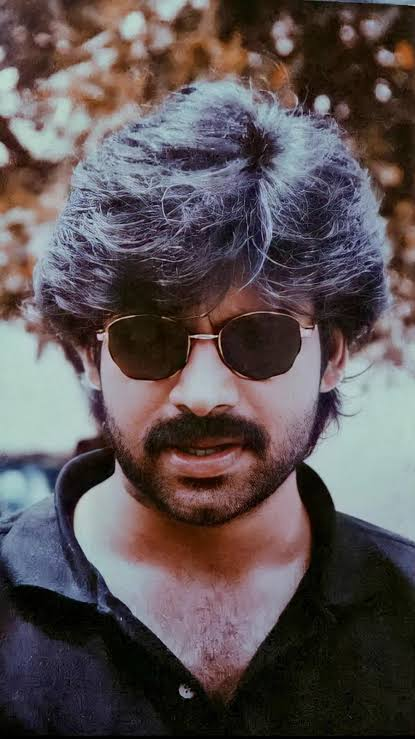
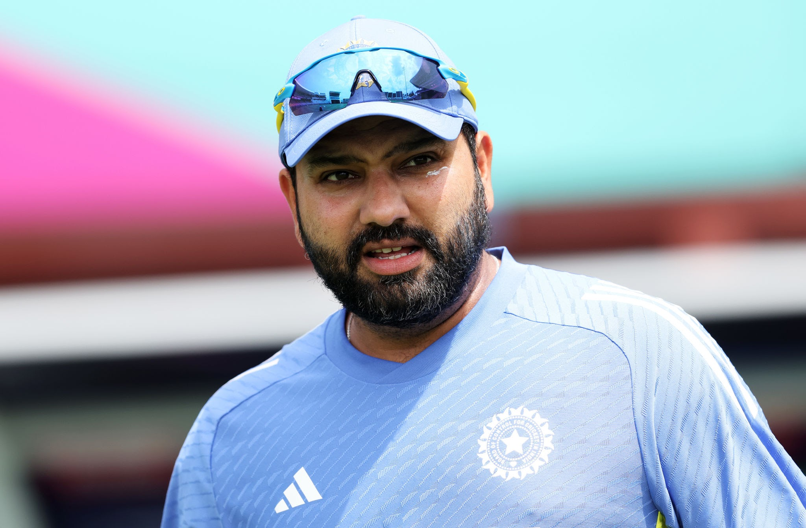
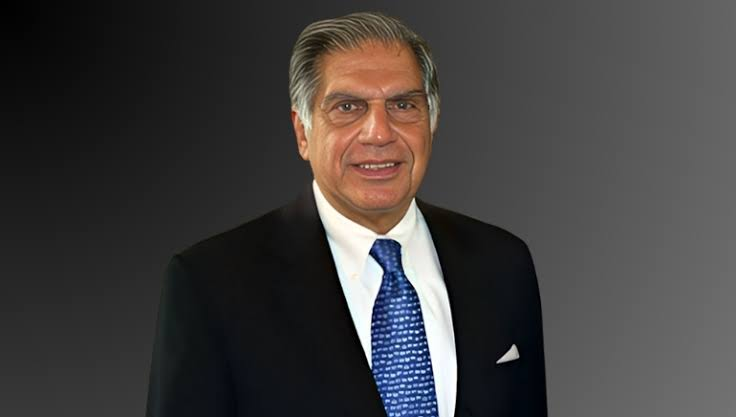

PAWAN KALYAN
pawan kalyan life story click here
Konidala Pawan Kalyan[3] (born Konidala Kalyan Babu; 2 September 1971[2]) is an Indian politician, actor, action choreographer, martial artist and philanthropist, serving as the 10th Deputy Chief Minister of Andhra Pradesh since June 2024. He is also the Minister of Panchayat Raj, Rural Development & Rural Water Supply; Environment, Forests, Science & Technology in the Government of Andhra Pradesh and an MLA representing the Pitapuram constituency. He is the founder and president of the Janasena Party.
here some instagram videos of pithapuram MLA click here---------------------------------------------------------------------------------------------------------------------------------------------------------------------------------------
ROHIT SHARMA

About Hitman click hereRohit Gurunath Sharma (born 30 April 1987) is an Indian international cricketer who currently plays for and captains the India national cricket team in Test and One Day International (ODI) matches. Previously, he also captained the team in Twenty20 International (T20I) matches and led India's win in 2024 ICC Men's T20 World Cup, subsequent to which he retired from T20s in June 2024.[4][5] The right-handed batsman, who is considered one of the best batsmen of his generation and one of the greatest opening batters of all time,[6] is known for his timing, elegance, six-hitting abilities and leadership skills. HERE THE VIDEO OF ROHIT FIRST 2OO
---------------------------------------------------------------------------------------------------------------------------------------------------------------------------------------
RATAN NAVAL TATA
 About ratan tata click here
Ratan Naval Tata (born 28 December 1937) is an Indian industrialist, philanthropist and former chairman of Tata Sons. He was a chairman of the Tata Group from 1990 to 2012, and interim chairman from October 2016 through February 2017. He continues to head its charitable trusts.[2][3] In 2008, he received the Padma Vibhushan, the second highest civilian honour in India, after receiving the Padma Bhushan, the third highest civilian honour in 2000.[4]
Ratan tata success story video click here